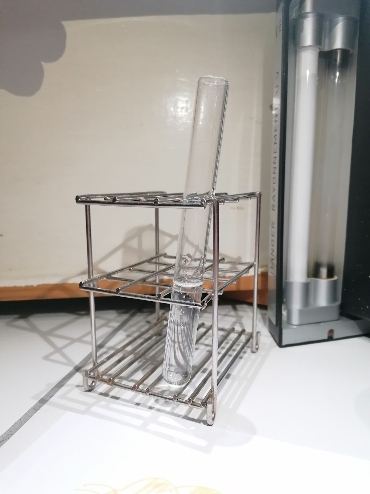

L'effet mystère
Lors de cette expérience, on est muni d’une boisson gazeuse, de surligneurs de différentes couleurs et d’une lampe spectrale de mercure.
A la lumière blanche:
la boisson est transparente

________________________________________________________________
photo : effet mystère 1
Maintenant, on éteint la lumière blanche pour ensuite allumer la lampe spectrale de mercure. On observe que la boisson gazeuse a changé de couleur. Celle-ci est devenue bleu laiteux ressemblant à la couleur émis par la lampe spectrale de mercure.
Après avoir dessiné avec les surligneurs, on constate que certaines couleurs, comme le orange et le jaune ressortent.
________________________________________________________________
photo : effet mystère 2 et effet mystère 3
________________________________________________________________
Avec cette expérience, nous pouvons supposer qu’on a ici le phénomène de diffusion cohérente aussi connu sous le nom d’effet Tyndall.
Qu’est ce que l’effet Tyndall?
Le nom "effet Tyndall" vient du scientifique britannique John Tyndall, qui a étudié ce phénomène au XIXe siècle. Cet effet est un phénomène optique qui se produit lorsqu'un faisceau de lumière traverse un liquide ou un gaz contenant des particules en suspension.
________________________________________________________________
Au cours de notre expérience, la lumière blanche n'était pas suffisamment intense pour révéler la présence des particules en suspension dans la boisson, l'effet Tyndall n'est pas visible. Cependant, lorsque la lampe spectrale de mercure est allumée, la lumière révèle la présence des particules en suspension en les faisant briller d'une couleur bleuâtre. Les couleurs orange et jaune des surligneurs sont également révélées par l'effet Tyndall en raison de la longueur d'onde de la lumière émise par la lampe spectrale de mercure.